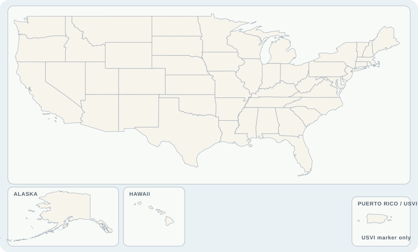

A planning screen, not a permit decision
Start with purpose. Then test fit.
The toolkit keeps agricultural operations at the center. It organizes place data, agro-energy pathways, case evidence, and implementation questions without pretending that a ZIP-level screen replaces site engineering, farm planning, utility review, or local approval.
Site conversation
Danville, Virginia
ZIP 24540 · Pittsylvania County · EPA Region 3
7b
Temperate
4.51
16
6.4
8.4
Screening aid: location matches and calculations organize early questions. Verify all conditions with the landowner, utility, engineer, agricultural operator, and local government.
The 5Cs
Five questions keep the technical conversation honest.
Climate + crops
Temperate land + crop context
Workbook findings
Potential planting and farm uses
Agro-energy locator
See where the precedents are—and what they teach.
National context
Your ZIP and the selected agro-energy cases
Selected ZIP centroid
Case study
Case in selected state

Source: U.S. Census Bureau 2025 Cartographic Boundary Files and toolkit ZIP coordinates. A territory-level marker is used when a case has no ZIP. National locator only; not for parcel, boundary, or distance measurement. North is up; no scale is shown because distance is not evaluated. Map by EPR, P.C.'s Timberwing Systems · July 2026.
Workbook resource list
Start local, then verify every program.
Program names and links come from the approved workbook. Availability, eligibility, deadlines, and incentives can change. Open the official source before relying on a record.
Planning + technical resources
Go deeper on design, zoning, and assistance.
Transparent method
What the screen does—and does not do.
Agro-energy scope
The screen starts with the agricultural function, then compares solar co-location, wind, geothermal, bioenergy, water, manual power, wood, and oil/gas precedents. Agrivoltaics is one pathway—not the definition of the whole toolkit.
Location match
The ZIP crosswalk supplies place, hardiness, climate, utility-rate, transmission, solar, geothermal, and wind context. ZIP coordinates are approximate locator points, not parcel locations.
Corrected solar screen
modules = floor(area × 35% ÷ 21.5278 sq ft)
capacity = modules × 0.40 kW DC
annual kWh = capacity × GHI × 365 × 0.80
gross value = annual kWh × selected utility rate
What “value” means
The result is an illustrative gross electricity value. It is not profit, net revenue, lease income, or guaranteed bill savings. Export compensation may be lower than the displayed retail rate.
Case ranking + map
Cases gain transparent points for state, climate, hardiness zone, agricultural use, and community setting. The locator uses Census state boundaries and toolkit ZIP coordinates; a labeled territory-level marker is used for the USVI case that has no workbook ZIP. A high rank means “study this,” not “copy this.”
Planning boundary
The screen does not test parcel geometry, soils, wetlands, title, interconnection capacity, structural design, economics, tax treatment, or legal compliance. Use NREL PVWatts or engineering analysis when a project moves beyond screening.
Primary method and policy references
- U.S. Department of Energy: Agrivoltaics
- NREL PVWatts: detailed preliminary solar production modeling
- U.S. Census Bureau: 2025 Cartographic Boundary Files
- NREL: The 5 Cs of Agrivoltaic Success Factors
- Virginia Code § 10.1-1197.5
- Virginia Code § 15.2-2288.8
- Piedmont Environmental Council: Roundabout Meadows
Final action step
Turn the screen into a planning worklist.
Use this after reviewing the place, land and crops, case map, resources, and method. It records what is known, what is missing, and who must answer next.
0 of 7
Evidence not recorded